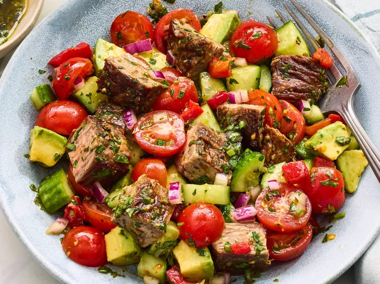

Homepage
Chimichurri Steak Salad Recipe

This chopped chimichurri steak salad is fresh, vibrant, and packed with bold flavors from juicy seared steak, crisp vegetables, and bright homemade chimichurri. Perfect for lunch or dinner, it’s a hearty yet refreshing salad that's put together in 30 minutes.
Ingredients
- 1 pound flank steak, trimmed
- 2 teaspoons kosher salt, divided
- 3/4 teaspoon freshly ground black pepper
- 2 tablespoons neutral oil, such as vegetable oil
- 1/2 cup extra-virgin olive oil
- 1/4 cup finely chopped fresh flat-leaf parsley
- 1/4 cup finely chopped cilantro
- 3 tablespoons fresh lemon juice
- 2 tablespoons red wine vinegar
- 2 cloves garlic, grated
- 1 teaspoon honey
- 1/2 teaspoon dried oregano
- 1/4 teaspoon crushed red pepper
- 2 cups cherry tomatoes, halved
- 1 cup chopped Persian cucumbers
- 1/2 cup drained and chopped roasted red bell peppers
- 1/4 cup finely chopped red onion
- 1/2 medium avocado, cubed
Steps
- Step 1: Preheat a large cast-iron skillet over medium-high heat.
- Step 2: Season steak with 1 teaspoon salt and 1/2 teaspoon pepper. Add oil to the preheated skillet and carefully add the steak; cook, flipping occasionally, until deeply browned and an instant-read thermometer registers 120 degrees F (48.8 degrees C), 6 to 8 minutes per side. Transfer steak to a cutting board and cover with aluminum foil to rest for 10 minutes.
- Step 3: Meanwhile, whisk together extra-virgin olive oil, parsley, cilantro, lemon juice, vinegar, garlic, honey, oregano, crushed red pepper, remaining 1 teaspoon salt, and 1/4 teaspoon pepper in a small bowl.
- Step 4: Toss tomatoes, cucumbers, roasted red bell pepper, and red onion with 1/2 cup of the dressing in a large serving bowl.
- Step 5: Slice rested steak against the grain and cut into 1-inch pieces; toss with salad and avocado. Drizzle with remaining 1/4 cup dressing before serving.